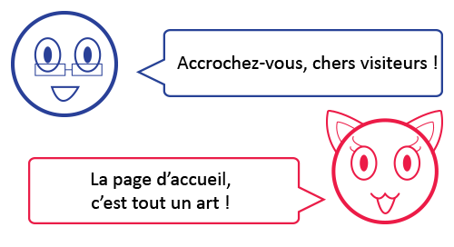

L'art de la page d'accueil
Sur ce site, chers visiteurs, vous trouverez toutes les informations relatives à la page d'accueil. Sous l'œil attentif de Carter et Saly, vous allez être invités à découvrir différents critères d'ergonomie afin d'optimiser la création de la page d'accueil de votre site Internet.
Les 20 critères présents ici ont été sélectionnés parmi les 113 recommandations rédigées par Jakob Nielsen et Marie Tahir. Jakob Nielsen est un expert dans l'ergonomie du web et l'utilisabilité des contenus numériques. Marie Tahir est la directrice de l'entreprise Nielsen Norman Group, spécialisée dans la recherche d'ergonomie web. Tous deux ont écrit l'ouvrage « L'art de la page d'accueil : 50 sites web passés au crible », duquel sont tirés les critères que vous pourrez appréhender ici.
Afin de mieux vous faire comprendre l'importance qu'a la page d'accueil dans la naissance d'un site Internet, nous allons vous présenter trois sites dont les pages d'accueil ont été analysées puis comparées. Pour plus de simplicité, ces trois sites concernent le même sujet : un jeu en ligne. Il s'agit des pages d'accueil des sites de League of Legends, Dota 2 et World of Warcraft.
Pour chaque page d'accueil, les critères seront classés en trois catégories pour plus de clarté : les respectés en vert, les neutres (qui sont en partie respectés) en gris et les non respectés en rouge. Sur la page de comparaison, les sites vont ainsi être notés, un critère respecté comptant pour un point, et un critère neutre pour un demi.
 La liste des critères